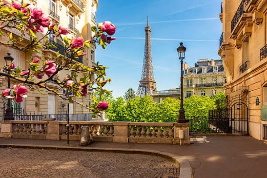

Про місто

Коротка характеристика
Париж — столиця Франції, одне з найвідоміших і найромантичніших міст світу, розташоване на берегах річки Сена.
Чому це місто у моєму топі?
Париж вражає своєю унікальною архітектурою, атмосферними кафе, багатством мистецтва та романтичною душевністю.
Цікаві факти
- Спочатку Ейфелеву вежу планували розібрати через 20 років після побудови.
- У Парижі розташований Лувр — найвідвідуваніший музей у світі.
Визначні місця
- Ейфелева вежа
- Музей Лувр
- Собор Паризької Богоматері (Нотр-Дам)
Особиста оцінка
Оцінка: 9 / 10
Дізнатися більше можна на Вікіпедії.